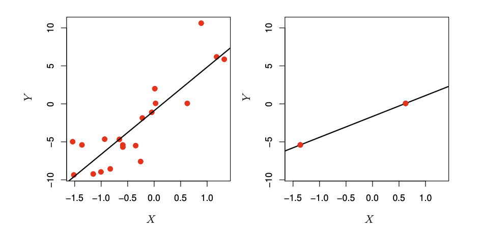
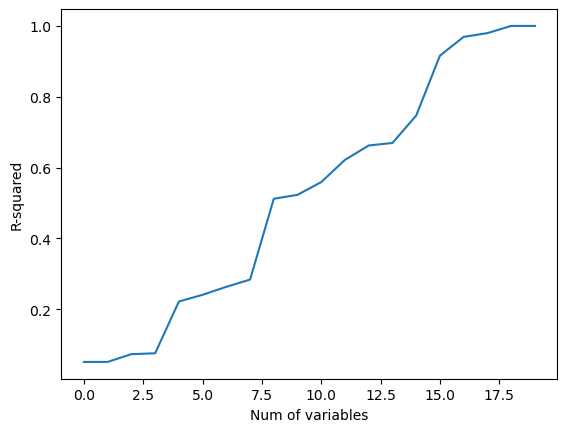
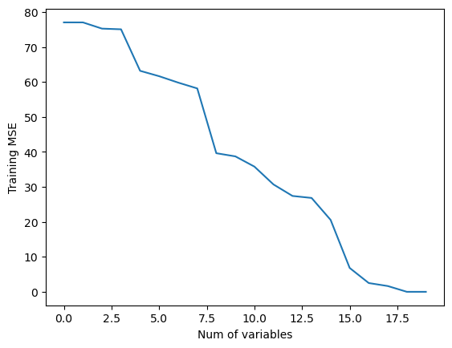
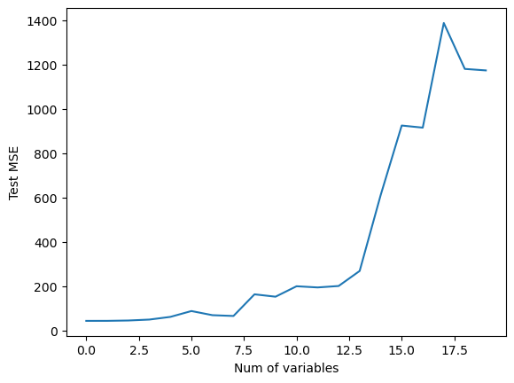

Most traditional statistical techniques for
regression and classification are
intended
for the low-dimensional setting
- Traditional prediction problem
- Blood pressure prediction model
- Use three features:age, sex, BMI
- The number observation is much great than the number of features
- $n>>p$, the problem is low-dimensional
Examples
- $p\approx 2,000$ for blood pressure prediction
- out of $p\approx 600,000$
- Language models typically have more than 1,000 features
Data sets containing more features than observations are often referred
to as high-dimensional, aka big data
Classical approaches such as least squares linear highdimensional regression are not appropriate
What's the problem in High Dimensions?
When the number of features $p$ is as large as,
or larger than, the number
of observations $n$,
least squares cannot be performed

- When $n>p$, ls line does not perfectly fit the data
- the regression line seeks to approximate observations as much as possible
The problem is simple: when $p>n$ or $p \approx n$,
a simple least squares regression line is too flexible and hence overfits the data



- $n=20$ training obs, $n=20$ test obs
Many of the methods seen earlier for fitting
less flexible least squares models (ridge regresion, the lasso) are particularly
useful for performing
regression in the high-dimensional setting
Let's go back to the code
- Takeaway?
- Regularization or shrinkage plays a key role in high-dimensional problems
- Appropriate tuning parameter selection is crucial for good predictive performance
- The test error tends to increase as the dimensionality of the problem increases, unless the additional
features are truly associated with the response $\rightarrow$ curse of dimensionality
In general, adding additional signal features that are truly associated with the response will improve the fitted model,
in the sense of leading to a reduction in test set error
However, adding noise features that are not truly associated with the response will lead
to a deterioration in the fitted model,
and consequently an increased test
set error
Alright. We've done for linear models.
Is there any general approach?
Consider the image precessing
Too heavy image?
- Increase compression rate
- Raw vs. JPEG
- limit the range of the values
- Cut the unnecessary parts of images
Feature transformation
|
feature1 |
feature2 |
feature3 |
| ind 1 |
1 |
0 |
2 |
| ind 2 |
10 |
2 |
22 |
| ind 3 |
0 |
1 |
1 |
- See: $\text{feature 3} = \text{fature 1}\times 2+\text{feature 2} $
- Do we have to keep feature 3?
- If not, how to find feature 3?